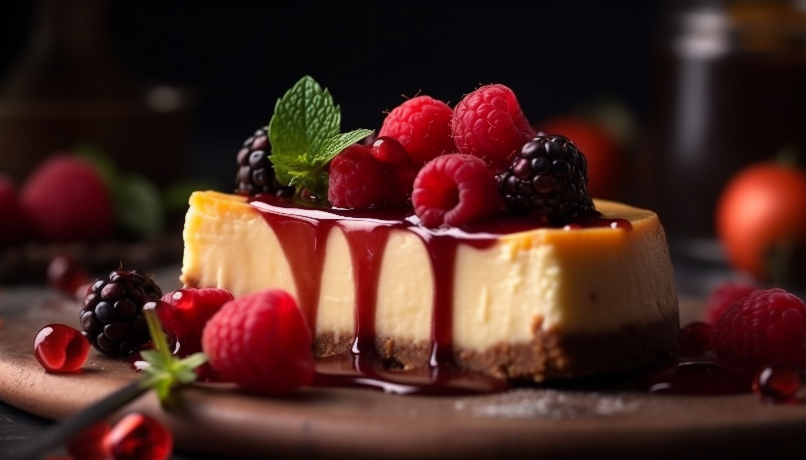

Cheesecake

Cheesecake is a rich and creamy dessert that typically consists of a mixture of soft, fresh cheese, eggs, and sugar on a crust made from crushed cookies or graham crackers. It can be flavored with various ingredients such as vanilla, chocolate, or fruit.
Ingredients
- 2 cups graham cracker crumbs
- 1/2 cup melted butter
- 4 packages (8 oz each) cream cheese, softened
- 1 cup granulated sugar
- 1 teaspoon vanilla extract
- 4 large eggs
- 1 cup sour cream
- 1/4 cup all-purpose flour
- Fresh fruit or fruit sauce for topping (optional)
Instructions
- Preheat your oven to 325°F (163°C).
- In a medium bowl, combine the graham cracker crumbs and melted butter. Press the mixture into the bottom of a 9-inch springform pan to form the crust.
- In a large mixing bowl, beat the softened cream cheese until smooth and creamy.
- Add the sugar and vanilla extract, and continue to beat until well combined.
- Add the eggs one at a time, beating well after each addition.
- Mix in the sour cream and flour until just combined. Be careful not to overmix.
- Pour the cheesecake batter over the crust in the springform pan.
- Bake for 55-70 minutes, or until the center is almost set but still slightly jiggly.
- Turn off the oven and leave the cheesecake inside with the door slightly open for about an hour to cool gradually.
- Remove from the oven and let it cool completely at room temperature, then refrigerate for at least 4 hours or overnight.
- Before serving, you can top the cheesecake with fresh fruit or fruit sauce if desired. Slice and enjoy!
Home